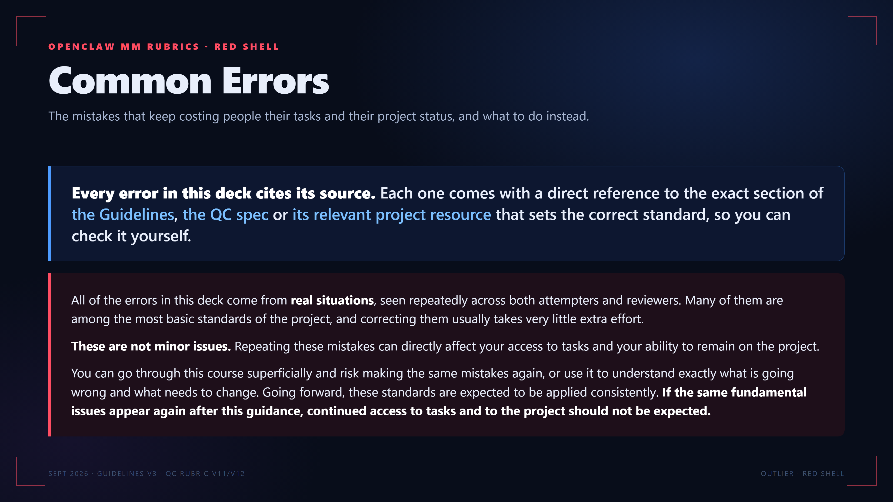

Real examples on this slide
← → step through · Home End first and last · F full screen · each slide has its own link, #1 to #13
OPENCLAW MM RUBRICS · RED SHELL
Common Errors
The mistakes that keep costing people their tasks and their project status, and what to do instead.
Every error in this deck cites its source. Each one comes with a direct reference to the exact section of the Guidelines, the QC spec or its relevant project resource that sets the correct standard, so you can check it yourself. Each example number is a link to the real task where it happened.
All of the errors in this deck come from real situations, seen repeatedly across both attempters and reviewers. Many of them are among the most basic standards of the project, and correcting them usually takes very little extra effort.
These are not minor issues. Repeating these mistakes can directly affect your access to tasks and your ability to remain on the project.
You can go through this course superficially and risk making the same mistakes again, or use it to understand exactly what is going wrong and what needs to change. Going forward, these standards are expected to be applied consistently. If the same fundamental issues appear again after this guidance, continued access to tasks and to the project should not be expected.
SEPT 2026 · GUIDELINES V3 · QC RUBRIC V11/V12
OUTLIER · RED SHELL